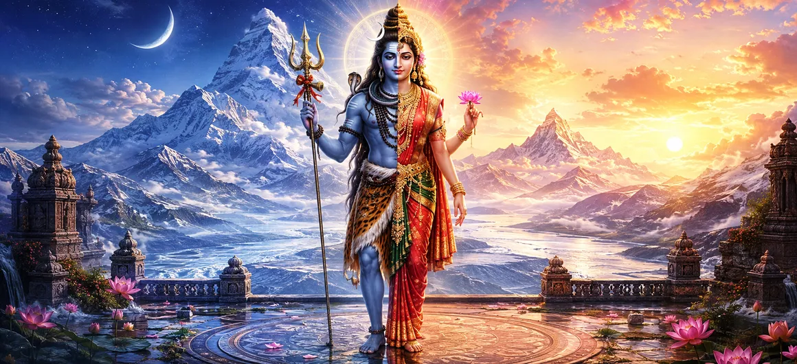

भगवान शिव का अर्ध-नारी अवतार
शतरुद्र संहिता में आगे बढ़ते हुए, तीसरा अध्याय अर्धनारीश्वर की गहन और अद्भुत अभिव्यक्ति का खुलासा करता है - समग्र रूप जहां भगवान शिव अपने दिव्य शरीर को देवी पार्वती (शक्ति) के साथ समान रूप से साझा करते हैं।
यह उत्कृष्ट अवतार शाश्वत सत्य का प्रतीक है कि चेतना (पुरुष) और गतिशील ऊर्जा (प्रकृति) मौलिक रूप से अविभाज्य हैं, जो संपूर्ण ब्रह्मांड के संयुक्त निर्माता और रखरखावकर्ता के रूप में कार्य करते हैं।
धर्मग्रंथ में बताया गया है कि कैसे इस गौरवशाली रूप ने सृष्टि के ठहराव को हल किया, साधकों को ब्रह्मांड और मानव आत्मा के भीतर मर्दाना और स्त्री सिद्धांतों के अंतिम सामंजस्य की शिक्षा दी।
अध्याय 3 की मुख्य बातें
अर्धनारीश्वर रूप
भगवान शिव और देवी पार्वती के समग्र शरीर को प्रकट करता है।
पुरुष और प्रकृति
सर्वोच्च चेतना और गतिशील ऊर्जा के बीच एकता को प्रदर्शित करता है।
सृजन के लिए उत्प्रेरक
लिंग तालमेल की शुरुआत करके ब्रह्मा के प्रारंभिक प्रजनन गतिरोध पर काबू पाया।
असममित प्रतीकवाद
शिव और शक्ति के हिस्सों के विशिष्ट आभूषण, पोशाक और विशेषताओं पर प्रकाश डाला गया है।
अद्वैत शिक्षण
सिखाता है कि विभाजन एक भ्रम है और अंतिम वास्तविकता सर्व-समावेशी है।
दिव्य संतुलन
ब्रह्मांडीय विकास को नियंत्रित करने वाली शाश्वत साझेदारी स्थापित करता है।
इस अध्याय में मुख्य विषय
- 01 अर्ध-महिला अवतार की प्रस्तावना →
- 02 ब्रह्मा की प्रजनन दुविधा →
- 03 अर्धनारीश्वर का भव्य स्वरूप →
- 04 दाएँ और बाएँ भाग: शिव और शक्ति →
- 05 देवी पार्वती का पृथक्करण और पुनः प्रकटीकरण →
- 06 सार्वभौमिक प्रजनन का त्वरण →
- 07 समग्र स्वरूप का दार्शनिक महत्व →
- 08 मर्दाना और स्त्री ऊर्जा का सामंजस्य →
- 09 आंतरिक संतुलन के लिए अर्धनारीश्वर का ध्यान करना →
- 10 ऋषभ की कहानी में परिवर्तन →
अर्ध-महिला अवतार की प्रस्तावना
अध्याय 3 अर्धनारीश्वर - भगवान शिव के प्रसिद्ध आधे पुरुष और आधे महिला रूप - की उत्पत्ति के संबंध में ऋषियों की गहन पूछताछ से शुरू होता है। सूत महर्षि यह बताते हुए आरंभ करते हैं कि सृष्टि के लौकिक आदेश को पूरा करने के लिए यह अद्वितीय अभिव्यक्ति कैसे अस्तित्व में आई।
सार्वभौमिक विकास के शुरुआती चरणों में, भगवान ब्रह्मा को ब्रह्मांड को आबाद करने का काम सौंपा गया था, लेकिन उन्होंने पाया कि उनकी रचनाएँ केवल मानसिक इच्छा के माध्यम से तेजी से बढ़ने में विफल रहीं।
शारीरिक मिलन और यौन प्रजनन की आवश्यकता को पहचानते हुए, ब्रह्मा ने दिव्य मार्गदर्शन प्राप्त करने के लिए कठोर तपस्या की।
ब्रह्मा की प्रजनन दुविधा
शास्त्र बताता है कि ब्रह्मा के प्रारंभिक मन से जन्मे पुत्रों (मानसपुत्र) ने सांसारिक प्रजनन में संलग्न होने के बजाय तपस्या का मार्ग चुना, जिससे ब्रह्मांड में जीवित प्राणियों के विस्तार को रोक दिया गया।
इस ठहराव से परेशान होकर, ब्रह्मा ने जनसंख्या वृद्धि में तेजी लाने और ब्रह्मांड को संतुलित करने के लिए समाधान खोजने के लिए भगवान शिव का गहन ध्यान किया।
ब्रह्मा की तपस्या से प्रसन्न होकर, भगवान शिव ने एक ऐसे रूप में प्रकट होने का निर्णय लिया जो पुरुष और महिला ऊर्जा के मिलन के माध्यम से सृष्टि के रहस्य को स्पष्ट रूप से प्रकट करेगा।
अर्धनारीश्वर का भव्य स्वरूप
ब्रह्मा की आंखों के सामने, भगवान शिव एक शानदार समग्र रूप में प्रकट हुए - एक आधा उज्ज्वल मर्दाना महिमा और दूसरा आधा चमकती स्त्री अनुग्रह, पूरी तरह से एक दिव्य शरीर में विलीन हो गया।
इस अद्भुत दृश्य ने निर्माता को चकित कर दिया, यह प्रदर्शित करते हुए कि अस्तित्व को कार्य करने के लिए चेतना के स्थिर सिद्धांत और ऊर्जा के गतिशील सिद्धांत दोनों की आवश्यकता होती है।
ब्रह्मा ने महसूस किया कि सच्ची संतान पूर्णता के इन दो मौलिक पहलुओं के सहयोग और पारस्परिक आकर्षण के माध्यम से ही फल-फूल सकती है।
दाएँ और बाएँ भाग: शिव और शक्ति
अध्याय 3 में अर्धनारीश्वर रूप की आकर्षक कल्पना का विवरण दिया गया है: दाहिना आधा हिस्सा भगवान शिव का है, जो उलझी हुई जटाओं, राख, गले में एक सांप और एक बाघ की खाल से सुशोभित है, जो शुद्ध बिना शर्त चेतना का प्रतिनिधित्व करता है।
बायां आधा भाग देवी पार्वती (शक्ति) है, जो उत्तम आभूषणों, बढ़िया रेशमी वस्त्रों, काजल-युक्त आंखों और सुगंधित फूलों से सुशोभित है, जो गतिशील भौतिक ऊर्जा और मातृ पोषण शक्ति का प्रतिनिधित्व करती है।
साथ में, वे एक अविभाज्य संपूर्ण बनाते हैं, जो दर्शाता है कि न तो एक दूसरे के बिना अस्तित्व में रह सकता है और न ही सृजन कर सकता है।
देवी पार्वती का पृथक्करण और पुनः प्रकटीकरण
ब्रह्मा की प्रार्थना पर, भगवान शिव ने स्त्री आधे (शक्ति) को अपने शरीर से अलग कर दिया, जिससे ब्रह्मांड को आबाद करने में सहायता करने के लिए एक स्वतंत्र देवी का रूप धारण किया।
तब देवी पार्वती ने शिव से पुनः जुड़ने के लिए अपनी कठोर तपस्या की, साथ ही नर-नारी मिलन के लिए लौकिक खाका भी प्रदान किया।
इस दिव्य नाटक (लीला) ने सभी नश्वर और दिव्य लोकों में विवाह और जैविक प्रजनन की पवित्र संस्था की स्थापना की।
सार्वभौमिक प्रजनन का त्वरण
अर्धनारीश्वर के आशीर्वाद से, ब्रह्मा नर और मादा प्राणियों (मिथुन) के जोड़े बनाने में सक्षम थे, जिससे ब्रह्मांड में सफलतापूर्वक जैविक प्रजनन शुरू हुआ।
जीवित जीव तेजी से बढ़ने लगे, जिससे महासागरों, पृथ्वी और आकाश में जीवन की विविध प्रजातियाँ भर गईं, जिससे निर्माता की भव्य योजना पूरी हुई।
इस प्रकार, अर्ध-महिला अवतार ने ब्रह्मांड की संपन्न जैव विविधता के लिए अंतिम उत्प्रेरक के रूप में कार्य किया।
समग्र स्वरूप का दार्शनिक महत्व
दार्शनिक रूप से, अर्धनारीश्वर अद्वैत (अद्वैत) का प्रतिनिधित्व करता है। यह आत्मा और पदार्थ, पुरुष और महिला, सक्रिय और निष्क्रिय के बीच कठोर वैचारिक बाधाओं को तोड़ता है।
शास्त्र सिखाता है कि परम वास्तविकता सभी लिंगों को शामिल करते हुए लिंग से परे है, जिसमें शिव की अचल शांति और शक्ति की गतिशील गतिविधि दोनों शामिल हैं।
इस एकता का एहसास आध्यात्मिक साधक को श्रेष्ठता और विभाजन के सांसारिक भ्रम से मुक्त करता है।
मर्दाना और स्त्री ऊर्जा का सामंजस्य
अध्याय 3 इस बात पर जोर देता है कि प्रत्येक व्यक्ति के भीतर, मर्दाना और स्त्री दोनों ऊर्जाएं सह-अस्तित्व में हैं। सच्ची आध्यात्मिक परिपक्वता में अंतर्ज्ञान के साथ तर्क, करुणा के साथ शक्ति और समर्पण के साथ कार्य को संतुलित करना शामिल है।
किसी भी ऊर्जा का अनादर करने से आंतरिक असंतुलन और आध्यात्मिक ठहराव होता है। दोनों का सम्मान करने से व्यक्ति को मनोवैज्ञानिक पूर्णता और दैवीय कृपा प्राप्त होती है।
आंतरिक संतुलन के लिए अर्धनारीश्वर का ध्यान करना
मानव सूक्ष्म शरीर के भीतर सूक्ष्म ऊर्जा चैनलों (इडा और पिंगला) में सामंजस्य स्थापित करने के इच्छुक योगियों के लिए शास्त्र दीप्तिमान अर्धनारीश्वर रूप पर ध्यान करने का निर्देश देता है।
दाईं ओर शिव और बाईं ओर शक्ति की कल्पना करने से आंतरिक संघर्ष, भावनात्मक अशांति और द्वैतवादी सोच को दूर करने में मदद मिलती है, जिससे एकता का सर्वोच्च आध्यात्मिक आनंद जागृत होता है।
ऋषभ की कहानी में परिवर्तन
अर्धनारीश्वर के राजसी दर्शन और शिव और शक्ति के दिव्य मिलन को प्रकट करने के बाद, अध्याय 3 पाठक को आगामी कथा के लिए तैयार करके समाप्त होता है।
पाठ अध्याय 4 में एक सहज परिवर्तन स्थापित करता है, जो महर्षि ऋषभ और भगवान शिव के प्रति उनकी भक्ति की प्रेरक पौराणिक कहानी की पड़ताल करता है।
अध्याय 3 की प्रमुख शिक्षाएँ
अविभाज्य संघ
चेतना और ऊर्जा एक दूसरे से स्वतंत्र रूप से अस्तित्व में नहीं रह सकते या निर्माण नहीं कर सकते।
जीवन के लिए उत्प्रेरक
अर्धनारीश्वर ने ब्रह्मांड में जैविक प्रजनन और जैव विविधता को खोला।
लिंग सद्भाव
समग्र रूप लिंगों के बीच पूर्ण समानता और सामंजस्य स्थापित करता है।
आंतरिक संपूर्णता
आध्यात्मिक साधकों को अपने भीतर पुरुषोचित तर्क और स्त्री अंतर्ज्ञान को संतुलित करना चाहिए।
द्वैतवाद से परे
अद्वैत को पहचानने से सांसारिक भ्रम और भावनात्मक संघर्ष दूर हो जाते हैं।
दिव्य लीला
अस्तित्व की भव्य लय को बनाए रखने के लिए परमात्मा दोहरे रूपों के माध्यम से खेलता है।
आध्यात्मिक चिंतन
शतरुद्र संहिता का अध्याय 3 संपूर्ण आध्यात्मिक साहित्य में सबसे गहन आध्यात्मिक छवियों में से एक - अर्धनारीश्वर - प्रस्तुत करता है। भगवान शिव और देवी पार्वती को एक ही शरीर में विलीन करके प्रस्तुत करके, यह शास्त्र आत्मा और पदार्थ, पुरुष और महिला, पर्यवेक्षक और अवलोकन के बीच विभाजन के भ्रम को तोड़ देता है। यह हमें सिखाता है कि सृजन कोई दुर्घटना नहीं है, बल्कि ब्रह्मांडीय संश्लेषण का जानबूझकर परिणाम है। जब हम अर्धनारीश्वर को देखते हैं, तो हमें याद दिलाया जाता है कि सच्ची संपूर्णता - ब्रह्मांड में और हमारे अपने दिलों के भीतर - शक्ति और कोमलता, शांति और क्रिया, चेतना और प्रेम के सामंजस्यपूर्ण एकीकरण की आवश्यकता है।
अध्याय 3 का संदेश जीना
अर्धनारीश्वर के ज्ञान को दैनिक जीवन में लागू करना सभी व्यक्तियों की पूरक भूमिकाओं का सम्मान करने, समाज और परिवार में मर्दाना और स्त्री दोनों गुणों का सम्मान करने से शुरू होता है।
विश्लेषणात्मक बुद्धि को सहानुभूतिपूर्ण करुणा के साथ जोड़कर अपने आंतरिक संतुलन का पोषण करें। निर्णयों का सामना करते समय, दृढ़ निश्चय को लचीली समझ के साथ जोड़ें, जो शिव और शक्ति के दोहरे सामंजस्य को दर्शाता है।
अर्धनारीश्वर के ज्ञान को दैनिक जीवन में लागू करना सभी व्यक्तियों की पूरक भूमिकाओं का सम्मान करने, समाज और परिवार में मर्दाना और स्त्री दोनों गुणों का सम्मान करने से शुरू होता है।
विश्लेषणात्मक बुद्धि को सहानुभूतिपूर्ण करुणा के साथ जोड़कर अपने आंतरिक संतुलन का पोषण करें। निर्णयों का सामना करते समय, दृढ़ निश्चय को लचीली समझ के साथ जोड़ें, जो शिव और शक्ति के दोहरे सामंजस्य को दर्शाता है।
प्रमुख आध्यात्मिक अवधारणाएँ
भगवान शिव और देवी शक्ति का संयुक्त आधा पुरुष और आधा महिला रूप।
शुद्ध बिना शर्त चेतना का प्रतिनिधित्व शिव का दाहिना आधा हिस्सा करता है।
गतिशील भौतिक ऊर्जा और मातृ पोषण शक्ति का प्रतिनिधित्व बाएं आधे भाग द्वारा किया जाता है।
सार्वभौमिक प्रजनन को आगे बढ़ाने के लिए नर और मादा प्राणियों के जोड़े बनाए गए।
अद्वैत का दर्शन आत्मा और पदार्थ के बीच सभी अलगावों को दूर करता है।
दैवीय चंचल अभिव्यक्ति ब्रह्मांडीय व्यवस्था और जीवन को बनाए रखने के लिए की गई।
अध्याय सारांश
शतरुद्र संहिता अध्याय 3 में अर्धनारीश्वर - भगवान शिव और देवी पार्वती के आधे पुरुष और आधे महिला अवतार - की शानदार और गहन अभिव्यक्ति का पता चलता है। ब्रह्मा के प्रजनन गतिरोध का सामना करते हुए, भगवान शिव इस समग्र रूप में प्रकट हुए ताकि यह प्रदर्शित किया जा सके कि सर्वोच्च चेतना (पुरुष) और गतिशील ऊर्जा (शक्ति) सार्वभौमिक सृजन में अविभाज्य भागीदार हैं। अध्याय में बताया गया है कि कैसे इस रूप ने ब्रह्मांड में जैविक प्रजनन को उत्प्रेरित किया, लिंग सद्भाव स्थापित किया और गैर-द्वैत का अंतिम दर्शन सिखाया। यह अध्याय 4 के लिए मंच तैयार करके समाप्त होता है, जो महर्षि ऋषभ की प्रेरक पौराणिक कहानी की पड़ताल करता है।
अक्सर पूछे जाने वाले प्रश्न
① शतरुद्र संहिता अध्याय 3 का प्राथमिक विषय क्या है?
प्राथमिक विषय में अर्धनारीश्वर, भगवान शिव और देवी पार्वती के अविभाज्य मिलन का प्रतिनिधित्व करने वाला अद्भुत आधा पुरुष और आधा महिला रूप शामिल है।
② अर्धनारीश्वर के दो भाग किसका प्रतिनिधित्व करते हैं?
दाहिना आधा हिस्सा भगवान शिव (पुरुष या चेतना) का प्रतिनिधित्व करता है, और बायां आधा देवी शक्ति या पार्वती (प्रकृति या गतिशील ऊर्जा) का प्रतिनिधित्व करता है।
③ भगवान शिव अर्धनारीश्वर रूप में क्यों प्रकट हुए?
उन्होंने इस रूप को यह प्रदर्शित करने के लिए प्रकट किया कि चेतना और ऊर्जा अन्योन्याश्रित हैं और सृजन पुरुष और स्त्री दोनों सिद्धांतों के संश्लेषण के बिना आगे नहीं बढ़ सकता है।
④ शिव पुराण के अनुसार यह रूप सृष्टि को कैसे प्रभावित करता है?
यह ब्रह्माण्ड में प्रजनन को आगे बढ़ाने में ब्रह्मा की प्रारंभिक कठिनाई को यह साबित करके हल करता है कि जीवित प्राणी पुरुष और महिला ऊर्जा के सहकारी तालमेल से उभरते हैं।
⑤ अर्धनारीश्वर भक्तों को क्या आध्यात्मिक पाठ पढ़ाते हैं?
यह अद्वैत, लैंगिक समानता, आंतरिक गुणों (शक्ति और करुणा) का संतुलन और यह अहसास सिखाता है कि परमात्मा अपने भीतर पूर्ण है।
⑥ अध्याय 3 अध्याय 4 से कैसे जुड़ता है?
अध्याय 3 अर्धनारीश्वर के माध्यम से शिव और शक्ति के सर्वोच्च मिलन की स्थापना करता है, जबकि अध्याय 4 महर्षि ऋषभ की कहानी जैसे विशिष्ट पौराणिक आख्यानों में परिवर्तित होता है।
"शिव चेतना हैं और शक्ति ऊर्जा हैं; अर्धनारीश्वर के रूप में एकजुट होकर, वे ब्रह्मांड की धड़कन और सभी जीवन का स्रोत बनाते हैं।"
शतरुद्र संहिता के माध्यम से जारी रखें
अध्याय 3 में भगवान शिव (अर्धनारीश्वर) के अद्भुत अर्ध-नारी अवतार का विवरण दिया गया है। महर्षि ऋषभ की प्रेरक पौराणिक कहानी का पता लगाने के लिए अध्याय 4 में आगे बढ़ें।